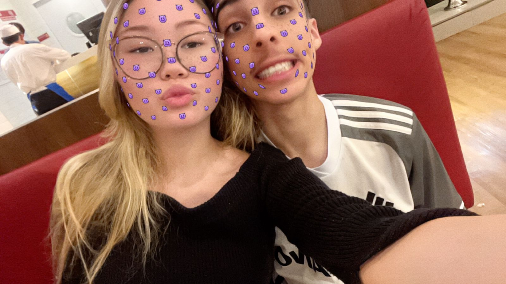

03.08.24
Olha meu amor, eu, voce e o vini na academia.
08.08.25

Mais um vez a gente na academia. Eu tenho muito a agradecer à academia, pois acredito que sem ela, a nossa historia seria totalmente diferente.
Neném mais lindo desse mundo
AAAI MEU AMOR
Olha que linda essa neném, eu amo tanto essa fotinha sua que voce nem imagina, sempre que vejo ela fico querendo morder essa bochechinha linda.
(por favor, mande mais fotos suas neném♥)
Apresentação
Amore, esse dia foi picoso, foi o dia da minha apresentacao na escola. Amor do ceu, nao sei se voce viu, mas nesse dia, a minha maquiadora era uma princesa MUITO linda, me apaixonei.
Primeiro dia na Chácara
Olha so meu amor, esse dia a gente se divertiu, ate atiramos com uma arma de chumbinho e ainda o pedro gravou a gente testando um novo tipo de beijo, aiai.
Indo embora da Chácara
Ai minha vida, esse dia foi muito especial, amo ter voce no meu colo quando estamos em algum carro, sinto que voce esta mais segura.
Primeiro selinho
Amor, se eu nao me engano esse foi o dia do nosso primeiro selinho e essa foto foi tirada na casa da amanda antes de irmos pra escola.
Nao gosto muito desse dia, mas ele nao deixa de ser um dia especial.
Johnny Rockets
Olha amor, esse foi o dia que comemos no Johnny Rockets, tava muito gostoso o hambúrguer.
Casamento

Nesse dia fomos para o casamento da Thayslaine.
Esse dia foi muito dahora tbm, dançamos juntos, nos divertimos e sera inesquecível
Mais neném

Ai meu amor, mais uma foto sua Neném♥
Pedido de Namoro

Meu amor, finalmente chegamos na parte do dia que viramos oficialmente Namorados.
De longe o dia mais especial da minha vida, o dia que ouvi um sim quando te perguntei se queria namorar comigo, eu estava muito nervoso, com medo de algo dar errado e nao sair do jeito q sonhei.
Esse dia foi incrível e vou lembrar dele ate o meu ultimo suspiro.
Meu amor Espero que tenha gostado do presente e que os próximos dias, meses e anos de nossas vidas sejam cheio de alegria e amor.
Ja se passaram dias desde o dia 01.01.25